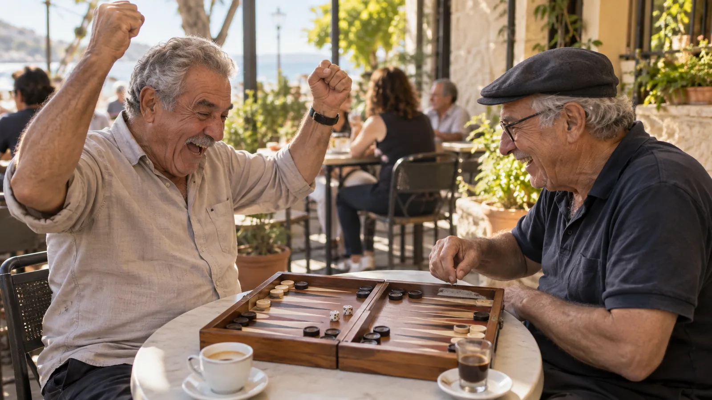
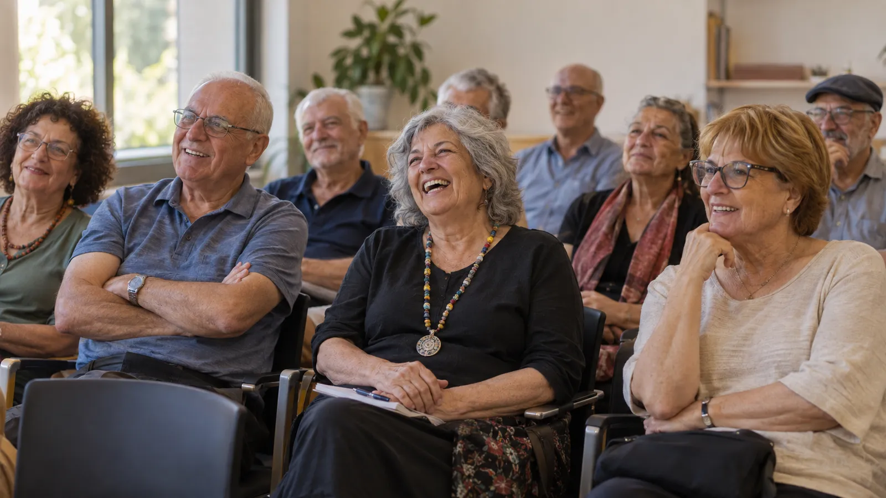
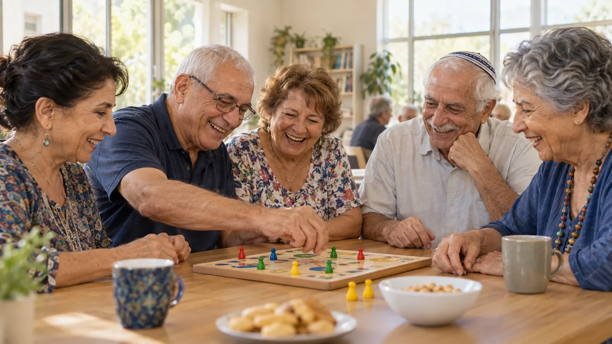
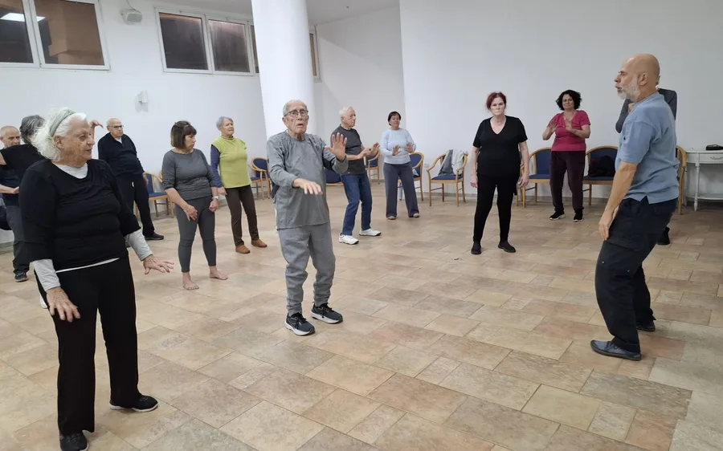
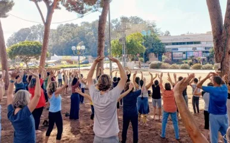
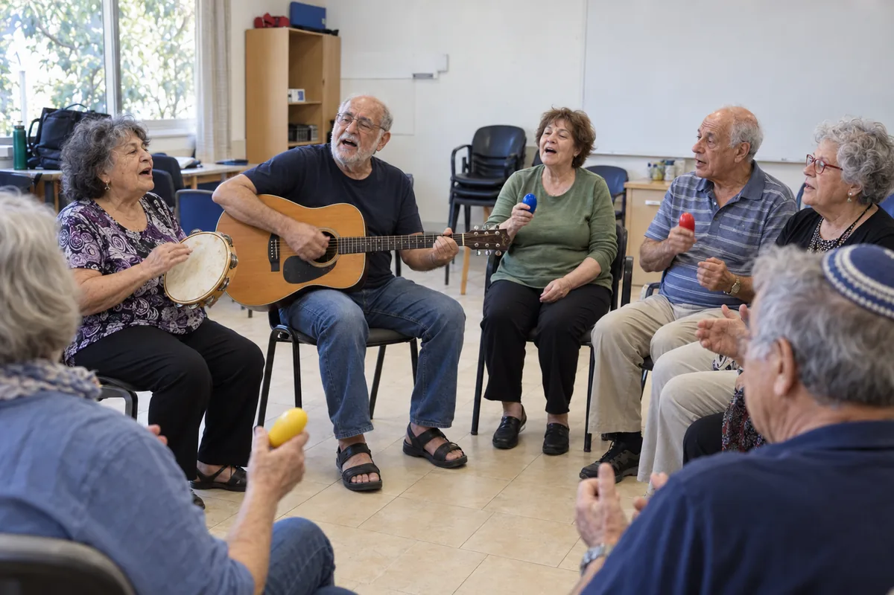

במהלך השנים שבהן ראיתי את סבתא שלי משתעממת מול הטלוויזיה כל היום, זה כאב לי בלב והבנתי עד כמה חשוב להוסיף משמעות ועניין לחיי היום-יום שלה. זה הוציא אותי לדרך במטרה להפיג את תחושת הבדידות, להוסיף חיות ותשוקה ליום-יום, ולעודד ולחזק את התחושת הערך והעניין שלה. המיזם שלנו נולד מתוך הרצון לסייע גם לאנשים אחרים לצאת מתחושות של שעמום ובידוד, וליצור מרחב חווייתי, יצירתי ומעשיר שמחבר בין לבבות, ומביא לדרך חיים מלאה יותר, עם חיות, משמעות והזדמנויות חדשות.

בעלים של "מתחברים"
אני הבעלים של "מתחברים", עסק שממוקד בהענקת חוויות משמעותיות ומעשירות לבני הגיל השלישי. עם שנים רבות של ניסיון בעולם החברתי והחינוכי, אני מחויב לחבר בין אנשים דרך סדנאות יצירה, זיכרונות, תנועה ולמידה.
בעבר עבדתי בעיריית תל אביב והדרכתי סדנאות בנושאי אקולוגיה וקהילה לגיל השלישי, והעברתי מפגשים בפני הגיל השלישי שהפכו לחלק בלתי נפרד מהקהילה.
בעברי עסקתי בעריכת דין ויש לי ניסיון בתחום ההיי-טק. בששת השנים האחרונות ניהלתי חברה שמפיקה סדנאות לכל הגילאים, ומטרתי היא להמשיך לפעול ליצירת חוויות שמקרבות, מחזקות ומעשירות את חיי כל אחד ואחת, בכל שלב בחיים.


רציתם פעם לשמור את הסיפורים של ההורים שלכם בצורה שתישאר באמת? אולי אפילו חשבתם על אוטוביוגרפיה, אבל גיליתם שזה תהליך שיכול להיות ארוך, מורכב ולעלות אלפי שקלים.
אנחנו יצרנו דרך פשוטה ונגישה יותר לעשות את זה, ובמחיר של 790 שקלים.
ההורים שלכם לא צריכים לדעת לכתוב ספר ולא צריכים לשבת שעות מול דף ריק. אנחנו מלווים אותם עם שאלות שעוזרות להם להיזכר ולספר על הילדות, המשפחה, האהבה, העבודה, הרגעים המשמעותיים והחוויות שהם אספו לאורך החיים.
הם משתפים את הזיכרונות, הסיפורים והתמונות שלהם, ואנחנו הופכים את הכול לסיפור חיים אישי, מסודר ומעוצב.
כך במקום שהזיכרונות המשפחתיים יישארו מפוזרים בתמונות, בהודעות ובסיפורים שעוברים בעל פה, הם הופכים למשהו שנשאר במשפחה.
זו יכולה להיות מתנה להורים, אבל בסופו של דבר זו מתנה גם לילדים ולנכדים.
אם חשוב לכם לשמור את הסיפורים של ההורים ולהעביר אותם לדורות הבאים, השאירו פרטים ונשמח להסביר לכם איך התהליך עובד.
השאירו פרטיםהרצאה חווייתית על איך שומרים על אנרגיה חיובית, חיבור פנימי ותחושת ערך בכל שלב בחיים – כולל כלים מעשיים לתנועה, נשימה, תזונה, קשרים חברתיים ואימון קוגניטיבי.
מסע דרך אש, מים, אוויר ועפר ודרך דומם, צומח, חי ומדבר – מיפוי הגוף והנפש דרך היסודות, עם תרגילים מעשיים לאיזון כל יסוד וכלים להבנת מקור מחלה וריפוי.
איך הרצון, הכיוונים והמפרקים בגוף מספרים את הסיפור הנפשי שלנו. הרצאה שמראה כיצד כל תופעה במערכת שלד-שריר משקפת ומראה כיצד הרצון שלנו מתממש בחיים.
הגוף, הלב והסיפור שעיצב אותנו – מסע הנפש דרך 12 פרקי החיים. הרצאה חווייתית ופרקטית שמראה כיצד חוויות עבר, זיכרונות ודפוסים רגשיים ממשיכים להשפיע על הבחירות וההתנהגויות שלנו כיום.
הרצאה מרתקת המגשרת בין חכמת הרפואה של הרמב"ם, שראתה בגוף ובנפש מערכת אחת בלתי נפרדת, לבין תובנות המחקר המדעי העכשווי. ההרצאה עוסקת בקשר שבין תזונה, בריאות נפשית ואיזון פנימי, נושא שהרמב"ם התייחס אליו כבר לפני כ-800 שנה בכתביו הרפואיים, ושהמדע המודרני חוזר ומאשש היום דרך מחקרים על ציר המעי-מוח, תזונה נוגדת דלקת והשפעת האכילה על מצב הרוח.





ועוד ועוד...
"אלעד הגיע אליי ויחד בנינו אלבום משפחתי מלא בזיכרונות, חוויות ורגעים מיוחדים. בנוסף, עברנו סדנת כיף שבה שיחקנו בתשחצים ועזרנו אחד לשני, והחוויות היו מושקעות, מרגיעות וממש נעימות. זה היה זמן איכות שכלל גם צחוק, קרבה ותחושת סיפוק, ואני ממליצה בחום לכולם לנסות את זה ולחוש את הקסם של חיבור ומשפחה."
"הכרתי את עולם הטכנולוגיה וה-AI בסדנה שהועברה לי, והחוויה הייתה מעשירה ומרתקת. למדתי כיצד כלים פשוטים יכולים לשפר את חיי היומיום שלי, ותחושת הביטחון שלי בעולם הטכנולוגי גדלה משמעותית. בנוסף, הסדנה היצירתית למוח כללה פעילויות שמחזקות את היכולות הקוגניטיביות, שומרים על הפוקוס והחדות החשיבתית, ומגבירות את תחושת ההישג והביטחון העצמי בכל רגע שמתעסקים בו בפעילויות מעוררות ומגבשות."
השאירו פרטים ונחזור אליך בהקדם האפשרי!